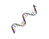

- Generated by
 1.10.0
1.10.0
|  |
RNA Structure Prediction
|
Predicting the most stable secondary structure for an RNA molecule. This structure is crucial for understanding its function as the structure of the molecule determines it’s various properties.
RNA is a basic single stranded biological molecule consisting of four bases ,Adenine ,Uracil ,Cytosine and Guanine which fold into themselves to give complex secondary structures.
There are Various rules that govern secondary structure formation:
➤ Pairs of bases match up, each base matches with 1 other base(Adenine always matches with Uracil,Cytosine always matches with Guanine)
➤ There are no kinks in the folded molecule.
➤ Structures are knot-free.
Given an RNA sequence represented by a string of characters (A, U, G, C), the goal is to find the most stable secondary structure. Stability is often measured based on minimum free energy and the stability of the molecule is proportional to the number of base-pairs in the molecule. Hence, we are tasked with finding the secondary structure given an RNA sequence that has the maximum number of base pairings.
An RNA molecule is a string B = b1b2 … bn ,where each bi is one of {A,C,G,U}
An secondary structure on B is a set of pairs S = {(i , j)}, where 1 ≤ i , j ≤ n and satisfies the following rules:
➤ The ends of each pair are separated by at least 4 intervening bases i.e. if (i , j) ε S, then i < j - 4 (No sharp turns).
➤ The elements in each pair in S consist of either {A,U} or {C,G} (in either order).
➤ S is a matching: no base appears in more than one pair.
➤ If (i,j) and (k,l) are two pairs in S, then we cannot have i < k < j < l (No knots).
We now take a dynamic programming approach to solve this problem.
We structure the sub-problems as follows:
1. OPT(i,j) is the maximum number of base pairs in a secondary structure for bibi+1 … bj. OPT(i,j) = 0, if i≥j-4.
2. In the optimal secondary structure on bibi+1 … bj
➤ if j is not a member of any pair, use OPT(i,j-1).
➤ if j pairs with some t < j - 4, knot condition yields two independent sub-problems, OPT(i,t -1) and OPT(t+1,j-1)
This gives us the recurrence as follows: OPT(i,j) = max{ OPT(i,j-1) { max(1+OPT(i,t-1) + OPT(t+1,j-1)) for all t (i,j-5) such that it can pair with j.